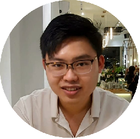

Product Development Engineer
Wilson Ng Wooi Sheng
ATE · High-Volume Manufacturing · Silicon Debug
Penang, Malaysia WhatsApp: @wilsonng294 wsheng0827@gmail.com LinkedIn profile
Profile
Results-driven product and test engineer experienced in automated test equipment (ATE) program development, high-volume manufacturing (HVM) ramp support, silicon debug, and test-cost optimization. Interested in applying production-test expertise and AI-driven automation to semiconductor manufacturing.
Key Achievements
- Product readiness: Delivered a semiconductor product’s production release qualification within a challenging timeline, supporting its transition to high-volume manufacturing.
- AI-enabled engineering automation: Built workflows for data analysis and reporting, engineering release-note preparation, and lab support, reducing manual effort and accelerating routine tasks.
- Accelerated delivery: Automated test-program integration CI/CD, reducing execution time and supporting earlier product readiness and customer delivery.
- Test efficiency: Improved production-test efficiency and yield performance, contributing to product quality and manufacturing readiness.
Experience
Senior Product Development Engineer
2024–PresentIntel Microelectronics (M) Sdn Bhd · Penang
- Develop production test programs for semiconductor products across multiple automated test equipment platforms.
- Build MCP servers and AI skills with Gemini Enterprise and GitHub Copilot to connect internal tools and automate engineering workflows.
- Convert legacy executable utilities into local MCP tools, enabling natural-language control and sharing the tools with the corporate community.
- Automate test-program integration CI/CD with GitHub Actions and self-hosted runners; develop automated test-program violation checks.
- Expand test coverage across assembly stages and socket configurations, including test sequencing, timing, and hardware assignments.
- Maintain test content and validate product configuration data to support test-program readiness.
- Lead cross-functional, cross-geography discussions on test-program releases and cold-socket elimination planning.
- Debug first silicon with DFT, design, and manufacturing teams; lead Sort-class test readiness for transition to HVM.
- Design, review, and support fabrication of die-level Sort interface load boards using Cadence Allegro and Mentor Graphics.
Product Development Engineer
2021–2023Intel Microelectronics (M) Sdn Bhd · Penang
- Developed DC test methods for post-silicon validation of semiconductor products.
- Collected data from nightly test runs to support yield-improvement planning and supported HVBI qualification during product ramp.
- Optimized cold-socket test time to reduce HVM test costs; supported content owners with module submissions and development.
Software Design Engineer II
2020–2021Pentamaster Corporation Bhd · Penang
- Designed and programmed handler-control software for burn-in testers, integrating XY gantry and Z-axis motion control with chamber-environment monitoring.
- Developed modular C# software components to improve machine reliability and maintainability.
System Engineer
2018–2020Bakat Industri Sdn Bhd · Selangor
- Developed SCADA graphics and control strategies using Siemens PCS 7.
- Supported factory testing and commissioning for automation projects.